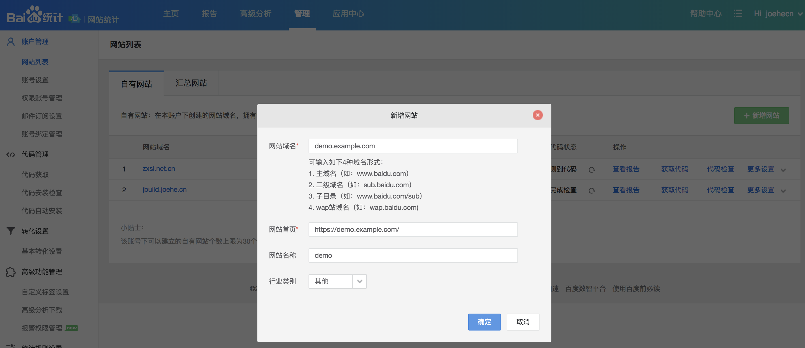
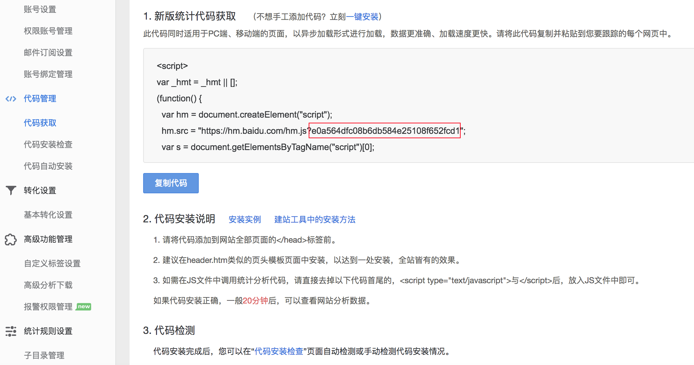

<!DOCTYPE html>
<html lang="en-US">
  <head>
    <meta charset='utf-8'>
    <meta http-equiv="X-UA-Compatible" content="IE=edge">
    <meta name="viewport" content="width=device-width, initial-scale=1">
    <link rel="stylesheet" href="/electron-baidu-tongji/assets/css/style.css?v=ac48ba2a0d29fadfb141ab5ba5806da768adf169">

<!-- Begin Jekyll SEO tag v2.5.0 -->
<title>Why? | electron-baidu-tongji</title>
<meta name="generator" content="Jekyll v3.7.3" />
<meta property="og:title" content="Why?" />
<meta property="og:locale" content="en_US" />
<meta name="description" content="baidu tongji for electron" />
<meta property="og:description" content="baidu tongji for electron" />
<link rel="canonical" href="http://localhost:4000/electron-baidu-tongji/" />
<meta property="og:url" content="http://localhost:4000/electron-baidu-tongji/" />
<meta property="og:site_name" content="electron-baidu-tongji" />
<script type="application/ld+json">
{"name":"electron-baidu-tongji","description":"baidu tongji for electron","@type":"WebSite","url":"http://localhost:4000/electron-baidu-tongji/","headline":"Why?","@context":"http://schema.org"}</script>
<!-- End Jekyll SEO tag -->

  </head>

  <body>

    <header>
      <div class="container">
        <h1>electron-baidu-tongji</h1>
        <h2>baidu tongji for electron</h2>

        <section id="downloads">
          
          <a href="http://github.com/joehecn/electron-baidu-tongji" class="btn btn-github"><span class="icon"></span>View on GitHub</a>
        </section>
      </div>
    </header>

    <div class="container">
      <section id="main_content">
        
<h1 id="why">Why?</h1>
<p>有同学问为什么不用 <a href="https://analytics.google.com/">google analytics</a></p>

<p>其实是可以用的，因为 <code class="highlighter-rouge">GA</code> 的统计节点部署在国内，所以访客数据能够正常被发送。
但由于众所周知的种种原因，在墙内无法打开 <code class="highlighter-rouge">Google Analytics</code> 网站，我们需要翻墙去看报表。</p>

<p>那么百度统计呢？</p>

<p>官网上只有针对网站和 <code class="highlighter-rouge">iOS</code>、<code class="highlighter-rouge">Android</code> 应用的的入口，就是找不到统计桌面应用的。</p>

<p>怎么办，我们造一个 ^_^</p>

<h1 id="how-to-use">How to use?</h1>

<h2 id="1-如果还没有百度统计网站账号请先注册">1. 如果还没有百度统计网站账号，请先注册</h2>
<p>注册地址: <a href="https://tongji.baidu.com/web/welcome/login">百度统计</a>, 我选择的是 “百度统计-站长版”，其它版本没有测试
</p>

<h2 id="2-新增网站">2. 新增网站</h2>
<p>因为我们构建的是 <code class="highlighter-rouge">Electron</code> 桌面程序，是没有网址的，所以网站域名我们随便填一个，能不能访问都没关系，符合格式就可以了
</p>

<h2 id="3-获取-siteid">3. 获取 siteId</h2>
<p>上面这三步的目的就是一个，拿到 <code class="highlighter-rouge">siteId</code>

<code class="highlighter-rouge">ps: 图中的代码检测是针对网站的，百度检测不到我们的应用</code></p>

<h2 id="最后就是安装和使用-electron-baidu-tongji-包了">最后就是安装和使用 electron-baidu-tongji 包了</h2>
<p>回到 <a href="https://github.com/joehecn/electron-baidu-tongji#installation">Installation</a></p>

      </section>
    </div>

    
  </body>
</html>
